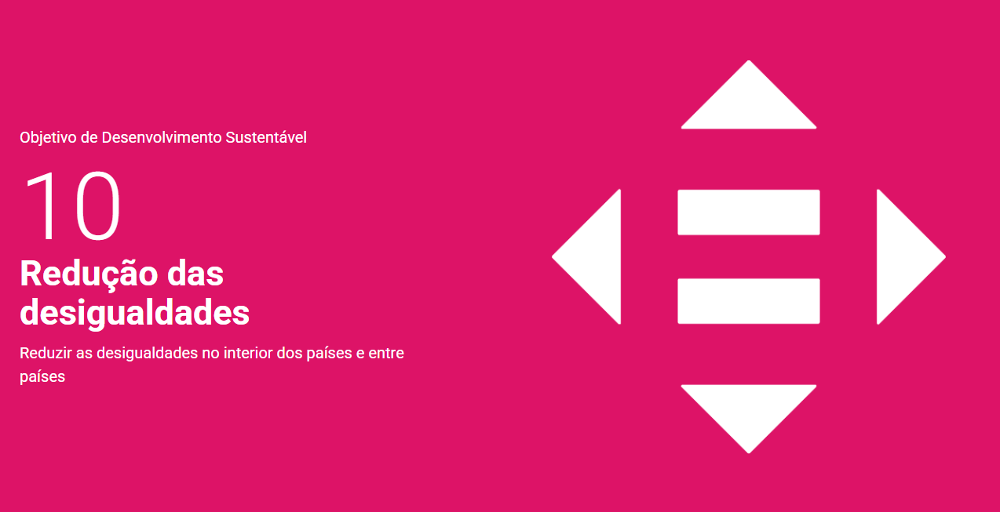
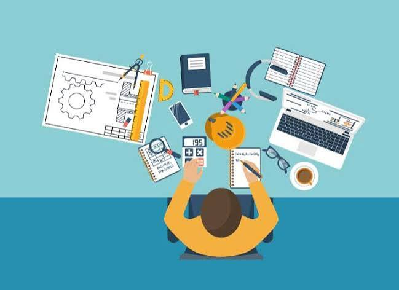
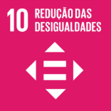

O Nosso Propósito
O EducaAção é uma plataforma criada para conectar universitários a jovens de comunidades carentes. O nosso foco é atuar diretamente no ODS 10: Redução das Desigualdades.
"A educação é a arma mais poderosa que podes usar para mudar o mundo."
Acreditamos que o conhecimento partilhado gera oportunidades iguais para todos. Se és estudante, junta-te a nós e faz a diferença na tua comunidade local.
Como podes ajudar?
- Mentorias de programação e lógica para adolescentes.
- Apoio escolar em matemática e fisica.
- Workshops sobre mercado de trabalho e currículos.
Impacto na Comunidade

